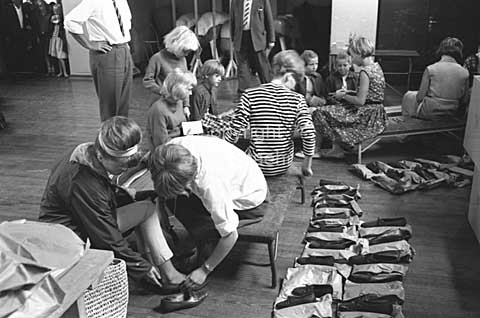

Hvem er vi?
Vi er syv pølsevognene i Aarhus
Hvoraf seks fungerer som pølsevogne
og én som kaffebar

Vores pølsevogne er styret af 7 forpagtere men er ejet af Børnenes Kontor Aarhus.
Børnenes Kontor i Aarhus har siden 1944 hjulpet børn, unge og økonomisk trængte familier med julehjælp og sommerlejr.

Børnenes Kontor deler sko og tøj ud til 4000 børn før ferien på
Frederikssundsvejens skole den. 15 juni 1964.
Det betyder at når du køber en pølse støtter du en god sag!
Adresse
Sdr. Ringgade 35
8000 Aarhus C
Telefonummer
51 29 69 62
aarhus@bornenes-kontor.dk